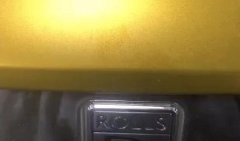

M Division
The serious end of the specialty. S85 V10 bottom ends, S50/S54 straight-sixes, S62 V8s — engines most garages won't open are rebuilt on the bench here, photographed at every stage.

Classic BMW — the house passion
The Instagram bio says it: late 20th century classics. E21, E30, E36, E39, shark-nose 6 and 7 Series — M10s and M20s machined and rebuilt, cars recommissioned sympathetically with period-correct parts.

Modern BMW
F and G series saloons, tourings and SUVs — manufacturer-schedule servicing, dealer-level diagnostics, coding and electrical work with your digital service history kept exactly as a dealer would.

MINI & i hybrids
Same group, same tooling. Modern MINIs for servicing, brakes and diagnostics — and BMW's electrified side too: an i8 has already been through the workshop.

Rolls-Royce
BMW-group engineering at its grandest. A Ghost has been in for oil leaks, and the retracting Spirit of Ecstasy mechanism was repaired here — the photos are in the gallery.

…and the odd Ferrari
Not the day job — but when an F430 arrived with misfires other garages couldn't trace, it left fixed. Proper diagnosis doesn't care about the badge.